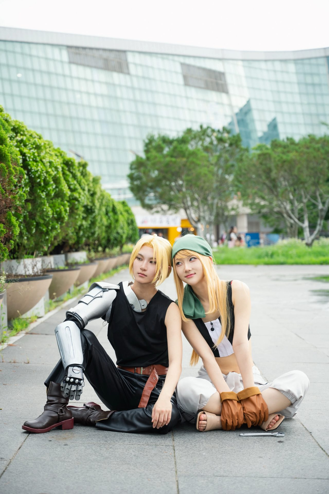
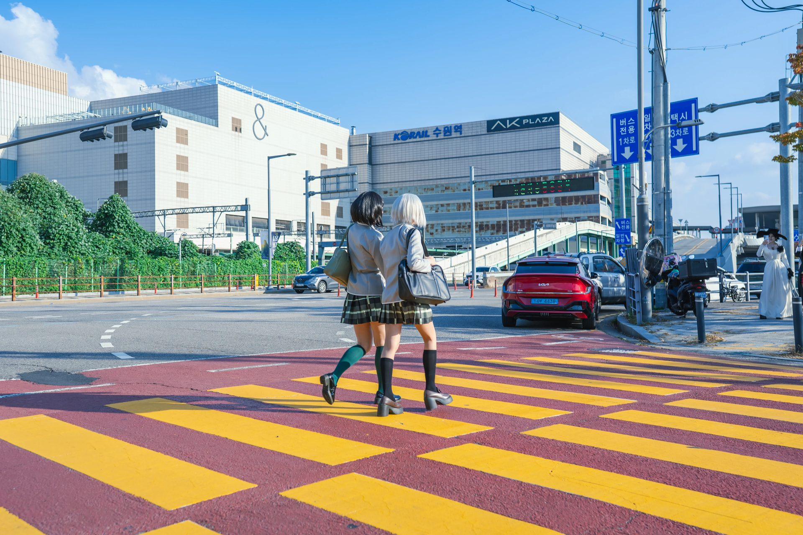
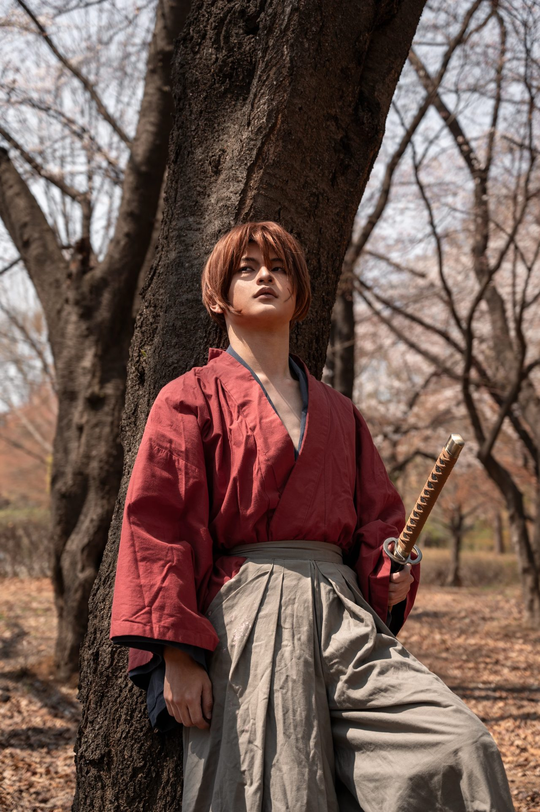
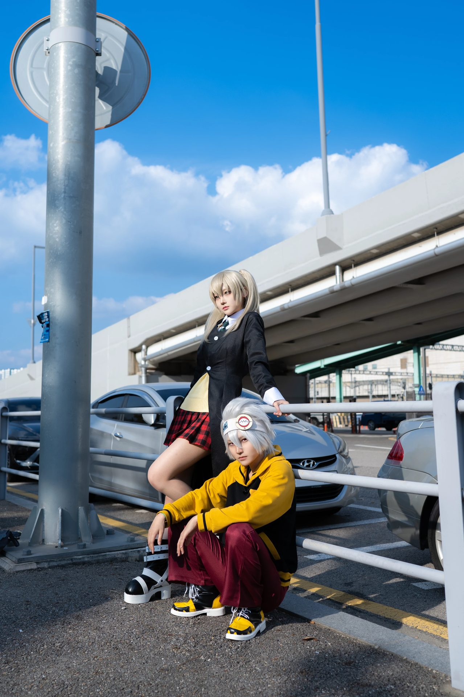
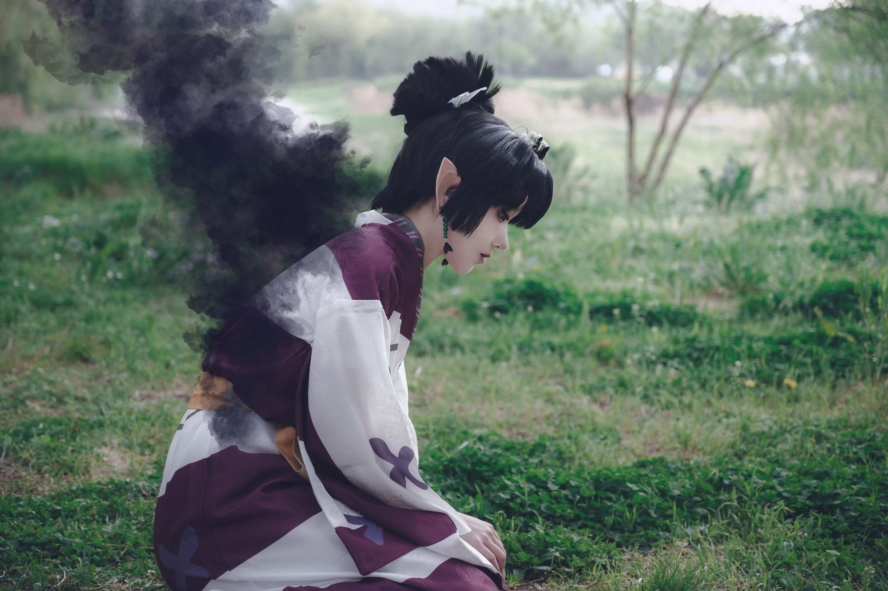
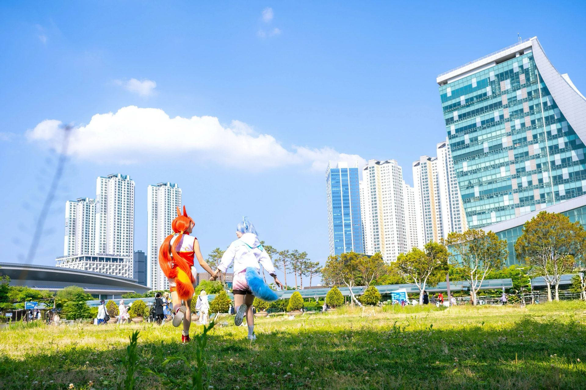
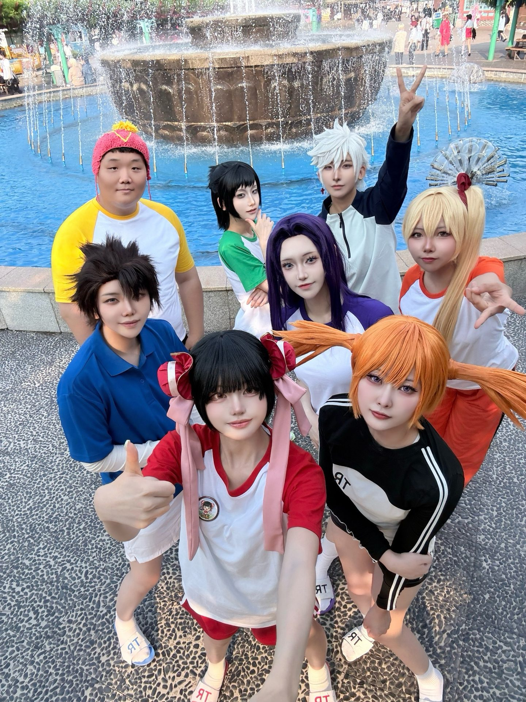

에피드게임즈 지원서 특별 질문
Q&A
거짓 없이, 편안한 마음으로 솔직하게 — 지원서가 원한 대로 이 탭은 조금 힘 빼고 사진으로 대신합니다.
Q1. 최근 3년 동안 참여한 서브컬처 오프라인 행사 횟수를 작성해 주세요.
"최근 3년간 안 간 행사가 없어요.."
증거 자료로 제출합니다.
서울 코믹월드 (청주, 부산, 서울 포함)
아코스타
AGF
플레이엑스포
일러스타
일러스타카페
부천만화축제
코스앤코믹 페스티벌




Q2. 본인이 생각하는 오타쿠 레벨(Lv.0~10)과 이유를 작성해 주세요.
- ·고전 장르, 특히 《블리치》 애정 — 좋아하는 장면을 코스어와 함께 사진으로 재현
- ·최근에는 코스프레 자체에도 관심이 생겨 직접 코스프레 행사(코코페 빅보)에 참여
- ·덕질의 증거를 사진으로 기록하고 보관하는 습관
- ·최근에는 AI 개발과 제가 찍은 사진을 융합해서.. '진짜같은 가짜' 프로젝트를 개인적으로 진행 중이에요.
- ·ㄴ https://chosikdongmul.github.io/FakeReal/odod/
- ·ㄴ https://chosikdongmul.github.io/FakeReal/odfc/
- ·ㄴ https://chosikdongmul.github.io/macPolio/



